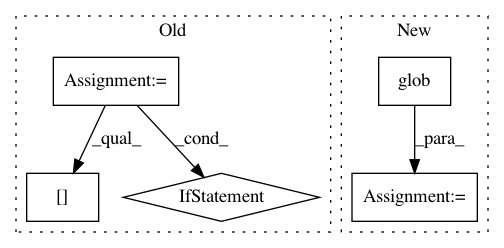

152314d80495bd34054b329fa169bb2dca399400,dipy/stats/analysis.py,,bundle_analysis,#Any#Any#Any#Any#Any#Any#Any#Any#,257
Before Change
indx = assignment_map(bundles, mbundles, no_disks)
//metric_files_names = os.listdir(metric_folder)
metric_files_names = ["csd_peaks.pam5"]
//["csa_peaks.pam5", "csd_peaks.pam5"]
//["fa.nii.gz", "md.nii.gz", "ad.nii.gz", "rd.nii.gz"]
_, affine = load_nifti(os.path.join(metric_folder, "fa.nii.gz"))
affine_r = np.linalg.inv(affine)
transformed_orig_bundles = transform_streamlines(orig_bundles,
affine_r)
for mn in range(0, len(metric_files_names)):
ind = np.array(indx)
fm = metric_files_names[mn][:-7]
bm = mb[io][14:-4]
print("bm = ", bm)
if bm[0:2]=="-C":
print("it"s a CC, miss!")
else:
dt = dict()
metric_name = os.path.join(metric_folder,
metric_files_names[mn])
print("metric = ", metric_files_names[mn])
if metric_files_names[mn][-7:] == ".nii.gz":
metric, _ = load_nifti(metric_name)
dti_measures(transformed_orig_bundles, metric, dt, fm,
bm, subject, group, ind, out_dir)
else:
fm = metric_files_names[mn][:3]
metric = load_peaks(metric_name)
//peak_values(bundles, metric, dt, fm, bm, subject, group,
// ind, out_dir)
peak_values(transformed_orig_bundles, metric, dt, fm, bm, subject, group,
ind, out_dir)
print("total time taken in minutes = ", (-t + time())/60)
def gaussian_weights(bundle, n_points=100, return_mahalnobis=False,
After Change
//metric_files_names = os.listdir(metric_folder)
metric_files_names_dti = glob(os.path.join(metric_folder,"*.nii.gz"))
metric_files_names_csa = glob(os.path.join(metric_folder,"*.pam5"))
//metric_files_names = ["csd_peaks.pam5"]
//["csa_peaks.pam5", "csd_peaks.pam5"]
//["fa.nii.gz", "md.nii.gz", "ad.nii.gz", "rd.nii.gz"]
_, affine = load_nifti(metric_files_names_dti[0])
affine_r = np.linalg.inv(affine)
transformed_orig_bundles = transform_streamlines(orig_bundles,
affine_r)
for mn in range(len(metric_files_names_dti)):
fm = metric_files_names_dti[mn][:-7]
bm = mb[io][14:-4]
print("bm = ", bm)
dt = dict()
metric_name = os.path.join(metric_folder,
metric_files_names_dti[mn])
print("metric = ", metric_files_names_dti[mn])
metric, _ = load_nifti(metric_name)
dti_measures(transformed_orig_bundles, metric, dt, fm,
bm, subject, group, ind, out_dir)
for mn in range(len(metric_files_names_csa)):
fm = metric_files_names_csa[mn][:3]
metric = load_peaks(metric_name)
//peak_values(bundles, metric, dt, fm, bm, subject, group,
// ind, out_dir)
peak_values(transformed_orig_bundles, metric, dt, fm, bm,
subject, group, ind, out_dir)
print("total time taken in minutes = ", (-t + time())/60)
def gaussian_weights(bundle, n_points=100, return_mahalnobis=False,
In pattern: SUPERPATTERN
Frequency: 3
Non-data size: 5
Instances
Project Name: nipy/dipy
Commit Name: 152314d80495bd34054b329fa169bb2dca399400
Time: 2020-03-18
Author: bramshq@gmail.com
File Name: dipy/stats/analysis.py
Class Name:
Method Name: bundle_analysis
Project Name: snipsco/snips-nlu
Commit Name: c31afbb3c7523e111bb13f16afb2cb98d3ffe424
Time: 2018-06-15
Author: adrien.ball@snips.net
File Name: snips_nlu/resources.py
Class Name:
Method Name: _load_words_inflections
Project Name: snipsco/snips-nlu
Commit Name: c31afbb3c7523e111bb13f16afb2cb98d3ffe424
Time: 2018-06-15
Author: adrien.ball@snips.net
File Name: snips_nlu/resources.py
Class Name:
Method Name: _load_verbs_lexemes